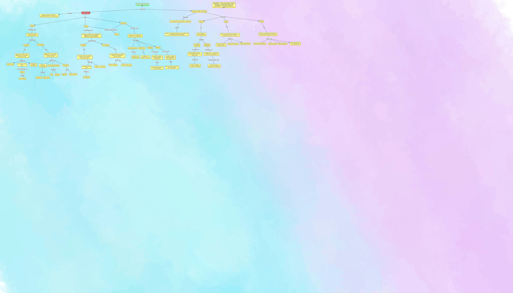

WARNING:
JavaScript is turned OFF. None of the links on this concept map will
work until it is reactivated.
If you need help turning JavaScript On, click here.
Este Cmap, tiene información relacionada con: Mapa_Empresa_Comercializadora.cmap, Balance General Permite Evaluar la liquidez, solvencia y estabilidad financiera de la organización, Los recursos que realmente le pertenecen a la organización Tales como Acciones comunes, Empresa Comercializadora Cuenta con Estado de perdidas y ganancias, Acciones comunes Dado por La decisión de emitir acciones, Gastos no relacionados directamente con la producción de bienes y servicios Algunos son Gastos financieros, Bienes de la organización Sufren de Apreciación, Actividades principales Las cuales son Las actividades por las que la organización constituye su razón de ser, Gastos no relacionados directamente con la producción de bienes y servicios Algunos son Gastos de administración, Aquellos que se van a hacer efectivos en un largo plazo (más de un año) Algunos son Intangibles, No corrientes Son Aquellos que se van a hacer efectivos en un largo plazo (más de un año), Dinero obtenido por la organización Mediante Actividades principales, Clientes A través De un crédito, Gastos directamente relacionados con la producción de bienes y servicios Tales son Costo de manufactura, Perdidas En caso tal que Los costos y gastos superen los ingresos de la organización, Los recursos que realmente le pertenecen a la organización Tales como Perdidas, Corrientes Son Los compromisos que se deben cumplir en un corto plazo (menos de un año), Estado de perdidas y ganancias Cuenta con Ingresos, Aquellos que se van a hacer efectivos en un largo plazo (más de un año) Algunos son Inversiones financieras, Los recursos que posee o tiene la empresa Se dividen en Corrientes, Gastos directamente relacionados con la producción de bienes y servicios Tales son Costos de fabricación
